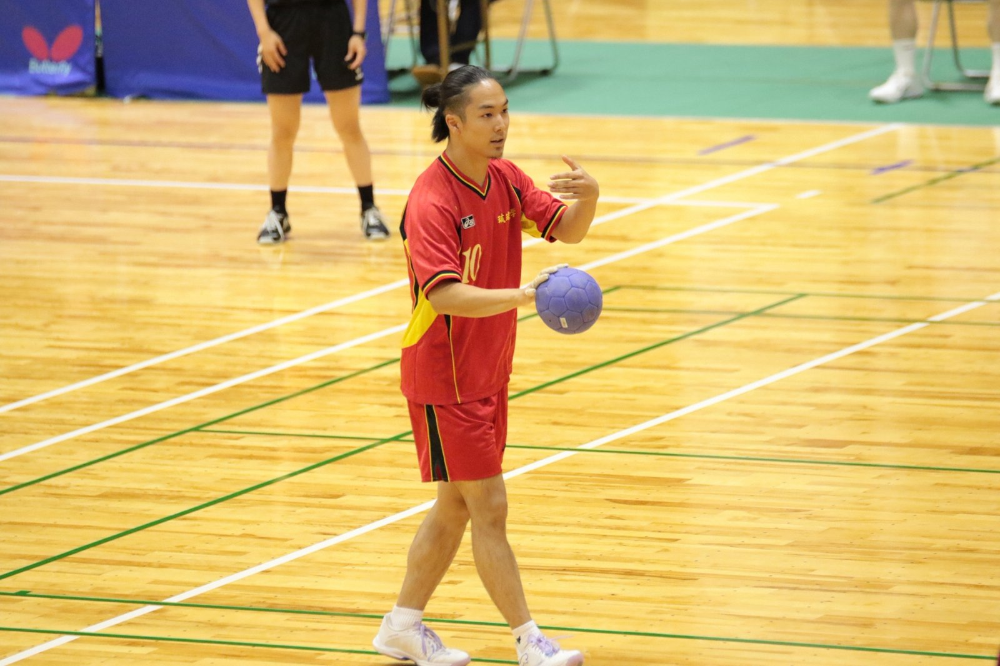

Web Application / Handball
RYUDAIHandTrack
ハンドボールの試合や練習のデータを記録・分析するために開発したWebアプリです。
シュート決定率やゴールキーパーのセーブ率などを可視化し、現在は琉球大学ハンドボール部で実際に使用しています。

PERSONAL PORTFOLIO
OKINAWA, JAPAN琉球大学 工学部｜AI・システム開発・ハンドボール
新しい経験に飛び込み、人との対話から学び、物事を深く考える。
テクノロジーの可能性を追いかけながら、人との縁や人情も大切に。
まだ知らない世界に触れながら、自分自身の可能性を広げています。
琉球大学工学部で電子情報通信を学んでいます。
学業の傍ら、305LABではAIに関する講座の運営支援やシステム開発などに携わっています。また、大学のハンドボール部にも所属しています。
さまざまな人と出会い、話をすることが好きです。新しい経験や人とのつながりを大切にしています。
Web Application / Handball
ハンドボールの試合や練習のデータを記録・分析するために開発したWebアプリです。
シュート決定率やゴールキーパーのセーブ率などを可視化し、現在は琉球大学ハンドボール部で実際に使用しています。